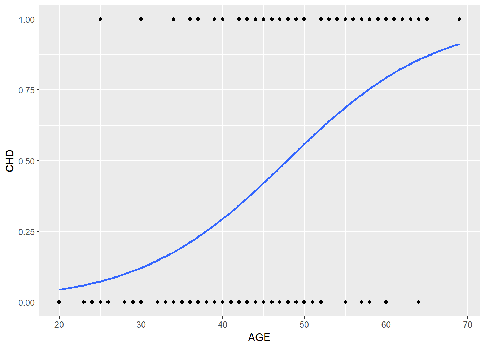
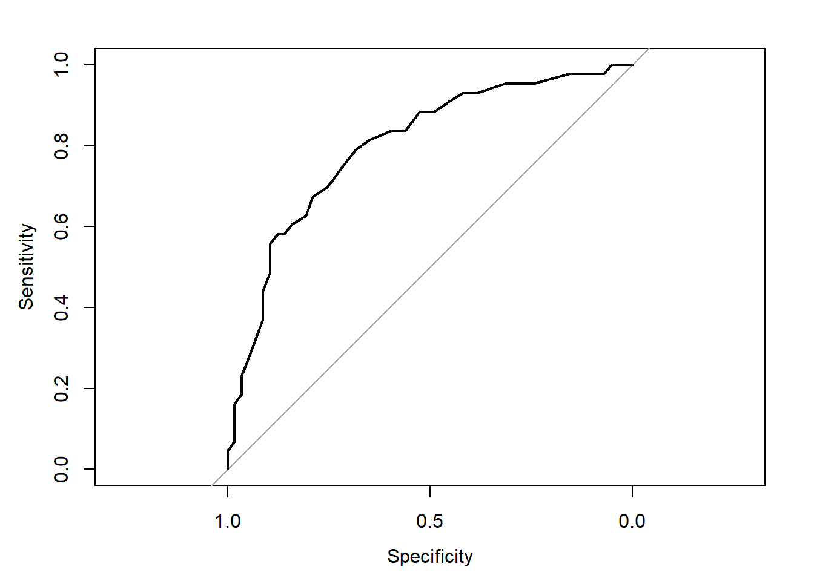

Capítulo 4 Regressão Logística
O modelo de regressão logística é utilizado quando a variável dependente é binária, categórica ordenada ou mesmo categórica desordenada (quando não há relação hierárquica entre elas). Abaixo exemplificam-se as perguntas que levam a estes três tipos de variáveis:
%
A regressão logística, portanto, trata os grupos de interesse (variável dependente) com valores de 0 e 1, ao passo que sua funcionalidade se ocupa de prever a probabilidade de uma observação estar no grupo igual a 1 (“eventos”), em relação ao grupo igual a zero (“não eventos”).
Para a estimação dos coeficientes das variáveis independentes, são utilizados o valor logit ou a razão de desigualdades Hair et al. (2009):
\[ Logit_i=ln\left (\frac{prob_{eventos}}{1-prob_{eventos}} \right )=b_0+b_1X_1+\ldots+b_nX_n \]
ou
\[ Logit_i=\left (\frac{prob_{eventos}}{1-prob_{eventos}} \right )=e^{b_0+b_1X_1+\ldots+b_nX_n} \]
Mais detalhes sobre o modelo de regressão logística podem ser verificados na seção chamada O Modelo de Regressão Logística, bem como em Hosmer e Lemeschow (2000) e Gujarati e Porter (2011).
4.1 Regressão Logística Simples - Exemplo 1
Este primeiro exemplo tratará da regressão logística simples, portanto, utilizando somente uma variável independente. Os dados são originados do livro de Hosmer e Lemeschow (2000), tratando-se de uma amostra com 100 pessoas. A variável dependente é a ocorrência ou não (1 ou 0) de doença coronária cardíaca (CHD), associando-se com a idade (AGE) dos indivíduos, criando assim um modelo de regressão logística.
library(readr)
chd <- read_delim("https://raw.githubusercontent.com/Smolski/softwarelivrer/master/avancado/cdh.csv",
";", escape_double = FALSE, trim_ws = TRUE)## Parsed with column specification:
## cols(
## AGE = col_integer(),
## AGRP = col_integer(),
## CHD = col_integer()
## )## AGE AGRP CHD
## Min. :20.00 Min. :1.00 Min. :0.00
## 1st Qu.:34.75 1st Qu.:2.75 1st Qu.:0.00
## Median :44.00 Median :4.00 Median :0.00
## Mean :44.38 Mean :4.48 Mean :0.43
## 3rd Qu.:55.00 3rd Qu.:7.00 3rd Qu.:1.00
## Max. :69.00 Max. :8.00 Max. :1.00Observa-se na figura abaixo a dispersão dos ``eventos’’ da CHD com a idade (AGE).
library(ggplot2)
ggplot(chd, aes(x=AGE, y=CHD)) + geom_point() +
stat_smooth(method="glm", method.args=list(family="binomial"), se=FALSE)
Monta-se então o modelo de regressão logística com a variável dependente CHD e a variável independente AGE. Abaixo demonstra-se a descrição da equação utilizando o comando summary() para o modelo m1 com a sintaxe básica:
glm(Y~modelo, family=binomial(link="logit"))
Assim é obtida a função de ligação estimada do modelo:
\[ \hat g(CHD) =-5,309+0,1109AGE \]
##
## Call:
## glm(formula = CHD ~ AGE, family = binomial(link = "logit"), data = chd)
##
## Deviance Residuals:
## Min 1Q Median 3Q Max
## -1.9718 -0.8456 -0.4576 0.8253 2.2859
##
## Coefficients:
## Estimate Std. Error z value Pr(>|z|)
## (Intercept) -5.30945 1.13365 -4.683 2.82e-06 ***
## AGE 0.11092 0.02406 4.610 4.02e-06 ***
## ---
## Signif. codes: 0 '***' 0.001 '**' 0.01 '*' 0.05 '.' 0.1 ' ' 1
##
## (Dispersion parameter for binomial family taken to be 1)
##
## Null deviance: 136.66 on 99 degrees of freedom
## Residual deviance: 107.35 on 98 degrees of freedom
## AIC: 111.35
##
## Number of Fisher Scoring iterations: 4Se observa o intercepto com o valor de -5,309, sendo que para a análise aqui proposta da relação entre CHD e AGE não obtém-se um significado prático para este resultado. No entanto, a variável de interesse é idade, que no modelo de regressão obteve o coeficiente de 0,1109 e pelo fato de ser positivo informa que quando a idade (AGE) se eleva, elevam-se as chances de ocorrência de CHD. De igual forma, nota-se que há significância estatística a \(p=0,001\) na utilização da variável AGE para o modelo, mostrando que possui importância ao modelo de regressão proposto.
4.1.1 Estimando a Razão de Chances
O modelo de regressão logística, porém, traz os resultados dos estimadores na forma logarítma, ou seja, o log das chances da variável idade no modelo é 0,1109. No entanto, para uma interpretação mais enriquecida da relação da idade com o CHD é necessária a transformação deste coeficiente, ou seja, que seja efetuada a exponenciação da(s) variavel(eis) da regressão. Assim, obtém-se a razão das chances (OR - Odds Ratio em inglês) para as variáveis independentes.
Uma maneira prática de se obter a razão de chances no RStudio é utilizando o pacote \(mfx\). Novamente o intercepto não nos interessa nesta análise mas sim a variável AGE. Como demonstrado abaixo, o resultado da razão de chances da variável AGE foi de 1,1173, o que pode assim ser interpretado: para cada variação unitária na idade (AGE), as chances de ocorrência de CHD aumentam 1,1173 vezes. Dito de outra forma, para cada variação unitária em AGE, aumentam-se 11,73% ((1,1173-1)*100) as chances da ocorrência de CHD.
## Carregando pacotes exigidos: mfx## Carregando pacotes exigidos: sandwich## Carregando pacotes exigidos: lmtest## Carregando pacotes exigidos: zoo##
## Attaching package: 'zoo'## The following objects are masked from 'package:base':
##
## as.Date, as.Date.numeric## Carregando pacotes exigidos: MASS## Carregando pacotes exigidos: betareg## Call:
## logitor(formula = CHD ~ AGE, data = chd)
##
## Odds Ratio:
## OddsRatio Std. Err. z P>|z|
## AGE 1.117307 0.026882 4.6102 4.022e-06 ***
## ---
## Signif. codes: 0 '***' 0.001 '**' 0.01 '*' 0.05 '.' 0.1 ' ' 14.1.2 Determinando o Intervalo de Confiança
A determinação do intervalo de confiança do modelo proposto é relevante para que seja analizada a estimativa do intervalo de predição do coeficiente da variável independente, a um nível de confiança de 95%. Desta forma, em 95% dos casos, o parâmetro dos coeficientes estará dentro deste intervalo.
De forma prática é possível determinar os intervalos de confiança com o comando confint() commo observado abaixo, sendo que o coeficiente AGE toma o valor de 1,1173, podendo variar de 1,0692 a 1,1758.
## Waiting for profiling to be done...## OR 2.5 % 97.5 %
## (Intercept) 0.004944629 0.0004412621 0.0389236
## AGE 1.117306795 1.0692223156 1.17586814.1.3 Predição de Probabilidades
A partir dos coneficientes do modelo de regressão logística é possível, portanto, efetuar a predição da variável categórica CHD, ou seja, saber a chance de ocorrer CHD com relação à uma determinada idade (AGE). No exemplo abaixo, primeiramente utilizamos a idade média das observações (44,38 anos), criando assim um novo data.frame chamadio media. Para utilizar o valor da idade média na função de regressão obtida (\(m1\)), utiliza-se a função predict(), de acordo com valor da média encontrada (data.frame media). O resultado mostra que para a idade média da amostra, 44,38 anos, há uma probabilidade de 40,44% na ocorrência da doença CHD. Esta ferramenta permite também a comparação pelo pesquisador das diferentes probabilidades entre as diversas idades (variável AGE).
## AGE
## 1 44.38## AGE pred.prob
## 1 44.38 0.40449444.1.4 Matriz de Confusão
Uma maneira prática de qualificar o ajuste do modelo de regressão logística é pela projeção do modelo na tabela de classificação (ou Matriz de Confusão). Para isto, precisa-se criar uma tabela com o resultado da classificação cruzada da variável resposta, de acordo com uma variável dicotômica em que os valores se derivam das probabilidades logísticas estimadas na regressão (Hosmer e Lemeschow 2000). No entanto, é preciso definir uma regra de predição, que dirá se houve acerto ou não da probabilidade estimada com os valores reais, pois as probabilidades variam de 0 a 1 enquanto os valores reais binários possuem valores fixos de 0 ``ou’’ 1.
É intuitivo supor que se as probabilidades aproximam-se de 1 o índivíduo estimado pode ser classificado como \(\hat Y_i=1\), bem como de forma contrária, se o modelo estimar probabilidades perto de 0, classificá-la como \(\hat Y_i=0\). Mas qual nível utilizar? Para resolver este problema, é preciso em primeiro lugar determinar um ponto de corte para classificar a estimação como 0 ou 1. Usualmente na literatura se utiliza o valor de 0,5 mas dependendo do estudo proposto pode não ser limitado a este nível (Hosmer e Lemeschow 2000).
Após determinado o ponto de corte, é importante avaliar o poder de discriminação do modelo, pelo seu desempenho portanto em classificar os eventos'' dosnão eventos’’. Cria-se a Matriz de Confusão (vide Tabela xxx) com as observações de Verdadeiro Positivo (VP), Falso Positivo (FP), Falso Negativo (FN) e Verdadeiro Negativo (VN) e em seguida determinam-se alguns parâmetros numéricos, a serem descritos abaixo:
Precisão: representa a proporção das predições corretas do modelo sobre o total:
\[ ACC=\frac{VP+VN}{P+N} \]
onde \(P\) representa o total de “eventos” positivos (Y=1) e N é o total de “não eventos” (Y=0, ou negativo).
Sensibilidade: representa a proportação de verdadeiros positivos, ou seja, a capacidade do modelo em avaliar o evento como \(\hat Y=1\) (estimado) dado que ele é evento real \(Y=1\):
\[ SENS=\frac{VP}{FN} \]
Especificidade: a proporção apresentada dos verdadeiros negativos, ou seja, o poder de predição do modelo em avaliar como “não evento” \(\hat Y=0\) sendo que ele não é evento \(Y=0\):
\[ SENS=\frac{VN}{VN+FP} \]
Verdadeiro Preditivo Positivo: se caracteriza como proporção de verdadeiros positivos com relação ao total de predições positivas, ou seja, se o evento é real \(Y=1\) dada a classificação do modelo \(\hat Y=1\):
\[ VPP=\frac{VPP}{VN+FP} \]
Verdadeiro Preditivo Negativo: se caracteriza pela proporção de verdadeiros negativos comparando-se com o total de predições negativas, ou seja, o indivíduo não ser evento \(Y=0\) dada classificação do modelo como “não evento” \(\hat Y=0\):
\[ VPN=\frac{VN}{VN+FN} \]
 Fonte: Adaptado de Fawcett (2006).
Fonte: Adaptado de Fawcett (2006).
## Carregando pacotes exigidos: caret## Carregando pacotes exigidos: latticepdata <- predict(m1, newdata = chd, type = "response")
confusionMatrix(data = as.numeric(pdata>0.5), reference = chd$CHD)## Confusion Matrix and Statistics
##
## Reference
## Prediction 0 1
## 0 45 14
## 1 12 29
##
## Accuracy : 0.74
## 95% CI : (0.6427, 0.8226)
## No Information Rate : 0.57
## P-Value [Acc > NIR] : 0.0003187
##
## Kappa : 0.4666
## Mcnemar's Test P-Value : 0.8445193
##
## Sensitivity : 0.7895
## Specificity : 0.6744
## Pos Pred Value : 0.7627
## Neg Pred Value : 0.7073
## Prevalence : 0.5700
## Detection Rate : 0.4500
## Detection Prevalence : 0.5900
## Balanced Accuracy : 0.7319
##
## 'Positive' Class : 0
## 4.1.5 Curva ROC
A Curva ROC (Receiver Operating Characteristic Curve) associada ao modelo logístico mensura a capacidade de predição do modelo proposto, através das predições da sensibilidade e da especificidade.
## Type 'citation("pROC")' for a citation.##
## Attaching package: 'pROC'## The following objects are masked from 'package:stats':
##
## cov, smooth, var
- 1º Passo:
library(pROC) roc1=plot.roc(chd$CHD,fitted(m1))
- 2º Passo:
plot(roc1,print.auc=TRUE, auc.polygon=TRUE,grud=c(0.1,0.2),
grid.col=c("green","red"),max.auc.polygon=TRUE,auc.polygon.col="lightgreen",print.thres=TRUE)
4.1.6 O teste Hosmer e Lemeshow
## ResourceSelection 0.3-2 2017-02-28##
## Hosmer and Lemeshow goodness of fit (GOF) test
##
## data: chd$CHD, fitted(m1)
## X-squared = 2.2243, df = 8, p-value = 0.97344.1.7 Pseudo R^{2}
## $CoxSnell
## [1] 0.2540516
##
## $Nagelkerke
## [1] 0.3409928
##
## $McFadden
## [1] 0.2144684
##
## $Tjur
## [1] 0.2705749
##
## $sqPearson
## [1] 0.27255184.2 Regressão Logística Múltipla - Exemplo 2
O exemplo abaixo abordado foi extraído de Torres-Reyna (2014), onde observa-se o banco de dados criado chamado mydata, possuindo as variáveiscountry,year,y,y_bin,x1,x2,x3 eopinion. A variável dependente é y_bin, da qual foi categorizada entre 0 e 1 conforme a ocorrência de valores negativos emy. As variáveis independentes do modelo serãox1,x2ex3.
library(foreign)
mydata <- read.dta("http://dss.princeton.edu/training/Panel101.dta")
summary(mydata)## country year y y_bin
## A:10 Min. :1990 Min. :-7.863e+09 Min. :0.0
## B:10 1st Qu.:1992 1st Qu.: 2.466e+08 1st Qu.:1.0
## C:10 Median :1994 Median : 1.898e+09 Median :1.0
## D:10 Mean :1994 Mean : 1.845e+09 Mean :0.8
## E:10 3rd Qu.:1997 3rd Qu.: 3.372e+09 3rd Qu.:1.0
## F:10 Max. :1999 Max. : 8.941e+09 Max. :1.0
## G:10
## x1 x2 x3 opinion
## Min. :-0.5676 Min. :-1.6218 Min. :-1.16539 Str agree:20
## 1st Qu.: 0.3290 1st Qu.:-1.2156 1st Qu.:-0.07931 Agree :15
## Median : 0.6413 Median :-0.4621 Median : 0.51419 Disag :19
## Mean : 0.6480 Mean : 0.1339 Mean : 0.76185 Str disag:16
## 3rd Qu.: 1.0958 3rd Qu.: 1.6078 3rd Qu.: 1.15486
## Max. : 1.4464 Max. : 2.5303 Max. : 7.16892
## Utiliza-se uma função para Modelos Lineares Generalizados (glm - em inglês Generalized Linear Models), determinando a variável dependente (y_bin), as variáveis independentes (x1+x2+x3), a base de dados a ser utilizada (data=mydata) e a família dos modelos (family = binomial(link="logit")).
Abaixo os resultados da estimação do modelo utilizando o comando summary. Observa-se que os valores estimados mostram os coeficientes em formato logarítmo de chances. Assim, quando x3 eleva-se em 1 (uma) unidade, o log das chances esperado para x3 altera-se em 0,7512. Neste ponto, observa-se que as três variáveis independentes possuem efeitos positivos para determinação das chances do preditor ser igual a 1, caso contrário constariam com sinal negativo. A coluna \(Pr(>|z|)\) traz os p-valores das variáveis indicando o teste da hipótese nula. Como resultado a variável x3 revelou significância estatística a 10% ($<$0,10), no entanto o valor usual para considerá-la estatísticamente significante é 5% (0,05). Para fins de explanação do modelo, neste trabalho, serão efetuadas as demais análises do modelo de forma explicativa.
##
## Call:
## glm(formula = y_bin ~ x1 + x2 + x3, family = binomial(link = "logit"),
## data = mydata)
##
## Deviance Residuals:
## Min 1Q Median 3Q Max
## -2.0277 0.2347 0.5542 0.7016 1.0839
##
## Coefficients:
## Estimate Std. Error z value Pr(>|z|)
## (Intercept) 0.4262 0.6390 0.667 0.5048
## x1 0.8618 0.7840 1.099 0.2717
## x2 0.3665 0.3082 1.189 0.2343
## x3 0.7512 0.4548 1.652 0.0986 .
## ---
## Signif. codes: 0 '***' 0.001 '**' 0.01 '*' 0.05 '.' 0.1 ' ' 1
##
## (Dispersion parameter for binomial family taken to be 1)
##
## Null deviance: 70.056 on 69 degrees of freedom
## Residual deviance: 65.512 on 66 degrees of freedom
## AIC: 73.512
##
## Number of Fisher Scoring iterations: 5## Carregando pacotes exigidos: stargazer##
## Please cite as:## Hlavac, Marek (2018). stargazer: Well-Formatted Regression and Summary Statistics Tables.## R package version 5.2.1. https://CRAN.R-project.org/package=stargazer##
## Resultados
## =============================================
## Dependent variable:
## ---------------------------
## y_bin
## ---------------------------------------------
## x1 0.862
## (0.784)
##
## x2 0.367
## (0.308)
##
## x3 0.751*
## (0.455)
##
## Constant 0.426
## (0.639)
##
## ---------------------------------------------
## Observations 70
## Log Likelihood -32.756
## Akaike Inf. Crit. 73.512
## =============================================
## Note: *p<0.1; **p<0.05; ***p<0.01A razão de chances (OR - odds ratio em inglês) estimada no modelo terá de ser transformada por estar apresentada na forma logarítma conforme o modelo de regressão logística o estima. Assim, utiliza-se o pacote mfx para efetuar esta transformação para todo o modelo de forma automatizada (logitor(y_bin~x1+x2+x3,data=mydata)):
## Call:
## logitor(formula = y_bin ~ x1 + x2 + x3, data = mydata)
##
## Odds Ratio:
## OddsRatio Std. Err. z P>|z|
## x1 2.36735 1.85600 1.0992 0.27168
## x2 1.44273 0.44459 1.1894 0.23427
## x3 2.11957 0.96405 1.6516 0.09861 .
## ---
## Signif. codes: 0 '***' 0.001 '**' 0.01 '*' 0.05 '.' 0.1 ' ' 1O resultado acima evidencia que para uma alteração em 1 (uma) unidade em x3, a chance de que y seja igual a 1 aumenta em 112% ((2,12-1)*100). Dito de outra forma, a chance de y=1 é 2,12 vezes maior quando x3 aumenta em uma unidade (sendo que aqui mantêm-se as demais variáveis independentes constantes).
Como visto, para cada variação unitária em x3 o log das chances varia 0,7512. É possível estimar, portanto, a alteração das chances em função das médias dos valores de cada variável x1 e x2, e utilizar como exemplo os valores de 1, 2 e 3 para x3, para assim alcançar os preditores do log das chances nesta simulação, como segue abaixo:
Para facilitar a interpretação do modelo, se torna mais fácil depois de transformado a sua exponenciação dos coeficientes logísticos utilizando o comando exp(coef(logit)). Desta forma, para cada incremento unitário em x2 e mantendo as demais variáveis constantes, conclui-se que é 1,443 vezes provável que y seja igual a 1 em oposição a não ser (igual a zero), ou seja, as chances aumentam em 44,30%.
## (Intercept) x1 x2 x3
## 1.531417 2.367352 1.442727 2.119566O intervalo de confiança do modelo pode ser exposto utilizando o comando confint para os coeficientes estimados, como segue abaixo:
## Waiting for profiling to be done...## OR 2.5 % 97.5 %
## (Intercept) 1.531417 0.4387468 5.625299
## x1 2.367352 0.5129380 11.674641
## x2 1.442727 0.8041221 2.737965
## x3 2.119566 1.0038973 5.718637A partir do modelo logístico, podemos realizar predições das probabilidades de se encontrar o resultado y=1 conforme visto acima. Para isto, como exercício utilizaremos as médias das observações de cada variável independente do modelo. Em primeiro lugar deve ser criado um data.frame com os valores médios, como segue:
## x1 x2 x3
## 1 0.6480006 0.1338694 0.761851Utiliza-se o comando predict() para predição do modelo, como segue abaixo, informando o objeto criado com a equação do modelo (logit), a base de dados com as condições dos valores médios (allmean) e o tipo de teste requerido (“response”) para predizer as probabilidades. Como resultado, o modelo informa que constando os valores médios das variáveis independentes, obtêm-se a probabilidade de 83% em y se constituir igual a 1.
## x1 x2 x3 pred.prob
## 1 0.6480006 0.1338694 0.761851 0.83285554.2.1 Método Stepwise
O método Stepwise auxilia o pesquisador em selecionar as variáveis importantes ao modelo:
## Start: AIC=73.51
## y_bin ~ x1 + x2 + x3
##
## Df Deviance AIC
## - x1 1 66.736 72.736
## - x2 1 66.996 72.996
## <none> 65.512 73.512
## - x3 1 69.402 75.402
##
## Step: AIC=72.74
## y_bin ~ x2 + x3
##
## Df Deviance AIC
## - x2 1 67.330 71.330
## <none> 66.736 72.736
## + x1 1 65.512 73.512
## - x3 1 70.032 74.032
##
## Step: AIC=71.33
## y_bin ~ x3
##
## Df Deviance AIC
## <none> 67.330 71.330
## - x3 1 70.056 72.056
## + x2 1 66.736 72.736
## + x1 1 66.996 72.996##
## Call: glm(formula = y_bin ~ x3, family = binomial(link = "logit"),
## data = mydata)
##
## Coefficients:
## (Intercept) x3
## 1.1339 0.4866
##
## Degrees of Freedom: 69 Total (i.e. Null); 68 Residual
## Null Deviance: 70.06
## Residual Deviance: 67.33 AIC: 71.334.3 Regressão Logística Múltipla - exemplo 3
Abaixo segue um exemplo com uma variável dependente categórica:
- admin: Variável dependente = 0 (não admitido) e 1 (admitido)
- Rank: Variável independente = ranking da escola de proveniência do candidato
- Gre: Variável independente = exames prévios do candidato.
- Gpa: Variável independente = exames prévios do candidato.
library(readr)
binary <- read_csv("http://www.karlin.mff.cuni.cz/~pesta/prednasky/NMFM404/Data/binary.csv")## Parsed with column specification:
## cols(
## admit = col_integer(),
## gre = col_integer(),
## gpa = col_double(),
## rank = col_integer()
## )binary$rank <- factor(binary$rank)
mylogit <- glm(admit ~ gre + gpa + rank, data = binary, family = binomial(link="logit"))## Waiting for profiling to be done...## OR 2.5 % 97.5 %
## (Intercept) 0.0185001 0.001889165 0.1665354
## gre 1.0022670 1.000137602 1.0044457
## gpa 2.2345448 1.173858216 4.3238349
## rank2 0.5089310 0.272289674 0.9448343
## rank3 0.2617923 0.131641717 0.5115181
## rank4 0.2119375 0.090715546 0.4706961Referências
Hair, Joseph F., William C. Black, Barry J. Babin, e Ronald L. Tatham. 2009. Análise Multivariada de Dados. 6a ed. São Paulo: Bookman.
Hosmer, David W., e Stanley Lemeschow. 2000. Applied Logistic Regression. 2a ed. New York: Wiley.
Gujarati, Damodar N., e Down C Porter. 2011. Econometria básica. 5a ed. New York: Mc Graw Hill.
Fawcett, Tom. 2006. «An introduction to ROC analysis». Pattern Recognition Letters 27:861–74.
Torres-Reyna, Oscar. 2014. «Logit, Probit and Multinomial Logit models in R». http://dss.princeton.edu/training/LogitR101.pdf.